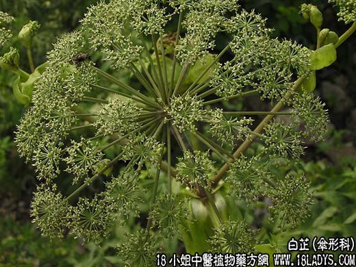

【中药概述】
白芷为伞形科草本植物白芷的根。辛、温。归胃、肺经。
1．祛风解表：用于感冒风寒，头痛、鼻塞等证，有散风寒、止疼痛之效。常与苍耳子，辛夷等配伍，如（九味羌活汤）、（<卫生宝鉴>白神散）。
2．祛风止痛：用于头风痛、偏头痛、眉棱骨痛、鼻渊头痛、齿疼等，能祛风止痛，如（川芎茶调散、都梁丸）、（<妇人良方>白芷散）、（丹溪眉框解痛方）。
3．消散排脓：用治痈肿疮疡，初起能消散，溃后能排脓，如（仙方活命饮、托里透脓汤）。
4．燥湿止带：用于妇女寒湿白带，能燥湿止带，可配海螵蛸等同用；属湿热带下、带下黄稠，可配清热燥湿药如黄柏，椿根皮等同用。
5．宣通鼻窍：用于鼻渊之浊涕长流，不闻香臭者，可配辛夷，苍耳子，防风，川芎等同用，如（白芷丸）。
【药效鉴别】
白芷主入阳明，芳香通窍，善祛风止痛。偏治齿龈连面颊部的肿痛、牙痛。
【药理作用】
白芷素能兴奋延脑呼吸中枢、血管运动中枢和迷走神经，能使呼吸增强、血压上升、脉搏变慢。
【化学成分】
含白当归素、白当归脑、白芷毒素等。
【用量用法】
6——30g，水煎服。
【使用注意】
阴虚火旺之证不宜。